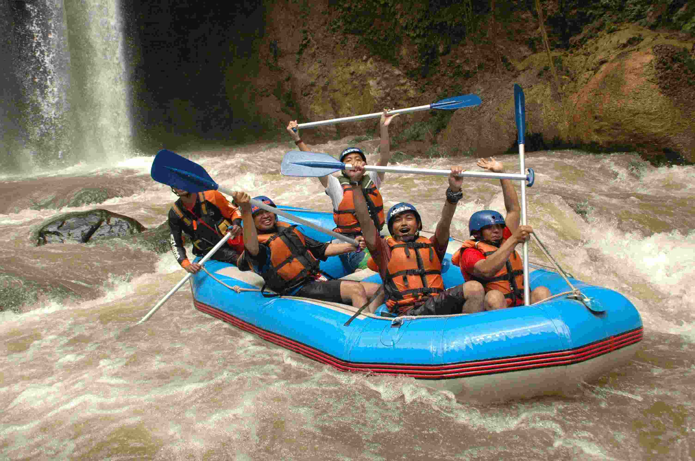
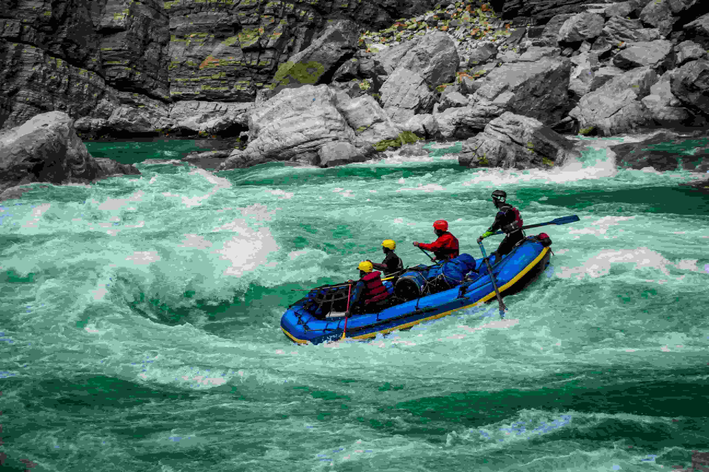
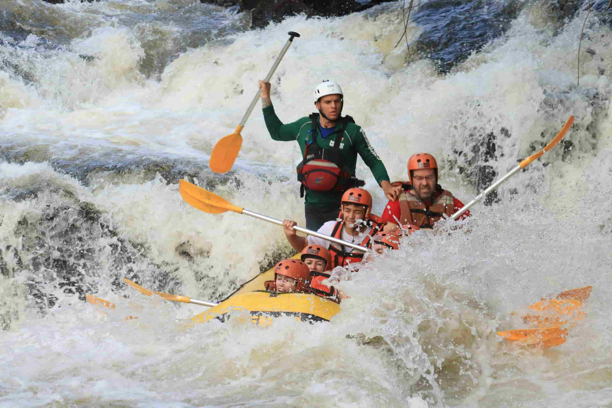

Nossos Passeios
Pronto para se Aventurar?
Entre em contato e reserve seu passeio hoje mesmo!
Fale Conosco
Passeio Iniciante
Ideal para quem nunca fez rafting. Percurso tranquilo de 5km no Rio Verde, com corredeiras leves e muito contato com a natureza.
- Duração: 2 horas
- Dificuldade: Fácil
- Idade mínima: 8 anos

Passeio Intermediário
Para quem já tem alguma experiência. Percurso de 8km com corredeiras de nível médio e paisagens deslumbrantes.
- Duração: 3 horas
- Dificuldade: Médio
- Idade mínima: 12 anos

Passeio Avançado
Para os mais corajosos! Percurso de 12km com corredeiras intensas e muita adrenalina garantida.
- Duração: 5 horas
- Dificuldade: Difícil
- Idade mínima: 16 anos
Tabela de Passeios
| Passeio | Distância | Duração | Dificuldade | Idade Mínima | Preço |
|---|---|---|---|---|---|
| Iniciante | 5 km | 2 horas | Fácil | 8 anos | R$ 150 |
| Intermediário | 8 km | 3 horas | Médio | 12 anos | R$ 220 |
| Avançado | 12 km | 5 horas | Difícil | 16 anos | R$ 350 |
| Família | 4 km | 2 horas | Fácil | 6 anos | R$ 120 |